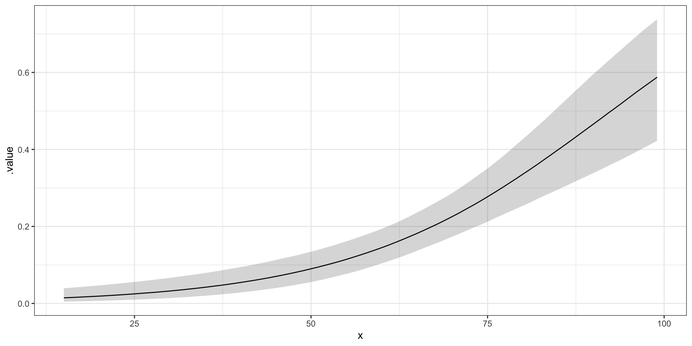

# A tibble: 280 × 3
day_of_year raintomorrow humidity9am
<dbl> <fct> <int>
1 45 No 55
2 11 No 43
3 261 Yes 62
4 347 No 53
5 357 No 65
6 254 No 84
7 364 No 48
8 293 No 51
9 304 Yes 47
10 231 Yes 90
# ℹ 270 more rowsBayesian Data Analysis
Bayesian Generalised Linear Models (Introduction)
Prof. Niamh Cahill (she/her)
Generalized Linear Models
A Generalized Linear Model (GLM) is a flexible extension of linear regression models that allows for:
Response variables to follow a non-normal distribution, such as binomial, Poisson, or others.
Link functions to connect the linear predictor (a linear combination of independent variables) to the mean of the response variable in a way that is appropriate for its distribution.
The GLM framework consists of three components:
Random component: Specifies the probability distribution of the response variable (e.g., normal, binomial, Poisson).
Systematic component: A linear predictor formed by the independent variables and their coefficients (e.g., ( \(\eta = X\beta\) )).
Link function: Transforms the expected value of the response variable to relate it linearly to the predictors (e.g., log, logit).
Examples include logistic regression, Poisson regression, and others tailored to specific data types and distributions.
Components of a generalized linear model
Random component
\(Y\) is the response variable. \(Y \sim\) some distribution.
E.g.,
\(Y\) is continuous, \(Y \sim\) Normal.
\(Y\) is binary, \(Y \sim\) Bernoulli.
\(Y\) is # successes out of n trials, \(Y \sim\) Binomial.
\(Y\) is count, \(Y \sim\) Poisson.
Systematic component
The linear combination of explanatory variables used in the model.
\[\eta = \alpha + \beta_{1}x_{1} + ... + \beta_{k}x_{k}\]
You could have \(x_{2}= x_{1}^{2}\) or \(x_{3}=x_{1}x_{2}\) etc.
Link function
Let \(\mu = \mathbb{E}[Y]\). The link function, \(g\), relates \(\mu\) to the systematic component: \[g(\mu) = \eta\]
Logistic regression models: binary responses
A logistic regression model is a type of generalized linear model used for binary outcomes, where the dependent variable represents two categories (e.g., success/failure). It uses the logit link function to model the relationship between predictors and the log-odds of the outcome.
For a logistic regression model, the components are as follows:
Random component
\[Y \sim \mbox{Bernoulli}(\pi).\]
\[\mathbb{E}[Y]= \pi\]
Systematic component
\[\eta = \alpha + \beta_{1}x_{1} + ... + \beta_{k}x_{k}\]
Link function: logit link
\[g(\pi) = \log\left(\frac{\pi}{1-\pi}\right) = \eta.\]
Logistic regression models: binary responses
This gives us the logistic regression function:
\[\log\left(\frac{\pi}{1-\pi}\right) = \alpha + \beta_{1}x_{1} + ... + \beta_{k}x_{k}.\]
Note that since we are interested in the parameter \(\pi\):
\[\begin{eqnarray*} % \mbox{logit}(\pi) &=& \eta \\ \mbox{log}\left(\frac{\pi}{1-\pi}\right) &=& \eta \\ \frac{\pi}{1-\pi} &=& e^{\eta} \\ % \pi &=& e^{\eta}(1-\pi) \\ % \pi + e^{\eta}\pi &=& e^{\eta} \\ % \pi(1 + e^{\eta}) &=& e^{\eta} \\ \pi &=& \frac{e^{\eta}}{1 + e^{\eta}} \\ % \pi &=& \frac{e^{\alpha + \beta_{1}x_{1} + ... + \beta_{k}x_{k}}}{1 + e^{\alpha + \beta_{1}x_{1} + ... + \beta_{k}x_{k}}}\\ \end{eqnarray*}\]Notice that \(0 < \displaystyle\frac{e^{\eta}}{1 + e^{\eta}} < 1\).
Aside: Interpreting Odds
Let an event of interest have probability \(\pi \in [0, 1]\) and corresponding odds \(\frac{\pi}{1 - \pi} \in [0, \infty)\).
Across this spectrum, comparing the odds to 1 provides perspective on an event’s uncertainty:
- The odds of an event are less than 1 if and only if the event’s chances are less than 50-50, i.e., \(\pi < 0.5\).
- The odds of an event are equal to 1 if and only if the event’s chances are 50-50, i.e., \(\pi = 0.5\).
- The odds of an event are greater than 1 if and only if the event’s chances are greater than 50-50, i.e., \(\pi > 0.5\).
Interpretation of logistic regression parameters
Consider the model with one predictor (\(k = 1\)):
\[\mbox{log}\left(\frac{\pi}{1-\pi}\right) = \alpha + \beta_{1}x\]
Interpretation of \(\alpha\):
At \(x = 0\), then \[\begin{eqnarray*} \log\left(\frac{\pi}{1-\pi}\right) &=& \alpha \\ \frac{\pi}{1-\pi} &=& e^{\alpha}\\ \end{eqnarray*}\] So \(e^{\alpha}\) = the success odds at \(x = 0\).
Interpretation of logistic regression parameters
Interpretation of \(\beta_{1}\):
Suppose \(X\) increases from \(x\) to \(x+1\). Let \(w_1\) = the success odds at \(x\) and \(w_2\) = the success odds at \(x+1\). Then the odds change from: \[w_1 = e^{\alpha + \beta_{1}x}\] to \[\begin{eqnarray*} w_2 &=& e^{\alpha + \beta_{1}(x+1)} \\ &=& w_{1} e^{\beta_{1}} \end{eqnarray*}\]
i.e., increasing \(X\) by 1 unit changes the success odds by a multiplicative factor of \(e^{\beta_{1}}\)
Or, \[\frac{w_2}{w_1} = e^{\beta_{1}}\]
i.e., \(e^{\beta_{1}}\) is the odds ratio for a unit increase in \(X\).
Example: Rain in Perth
Suppose we find ourselves in Australia, the city of Perth specifically. Located on the southwest coast, Perth experiences dry summers and wet winters. Our goal will be to predict whether or not it will rain tomorrow. We’re going to use today’s humidity as a predictor. Here’s a quick look at the data.
Model specification and logit link
The model specification:
\(y_i \sim \mbox{Bernoulli}(\pi_i).\)
\(\eta_i = \alpha + \beta_{1}x_i\)
Logit link function:
\(g(\pi_i) = \log\left(\frac{\pi_i}{1-\pi_i}\right) = \eta_i.\)

Specify the JAGS model (simple logistic regression)
The Model
The Data
Results: Parameters
m <- mod$BUGSoutput$sims.matrix
par_summary <- m %>%
gather_rvars(alpha,beta) %>%
median_qi(.value)
par_summary# A tibble: 2 × 7
.variable .value .lower .upper .width .point .interval
<chr> <dbl> <dbl> <dbl> <dbl> <chr> <chr>
1 alpha -5.11 -6.53 -3.81 0.95 median qi
2 beta 0.0555 0.0367 0.0752 0.95 median qi Results: plot data and fit
Calculate & plot the rain rate by humidity bracket
weather_bracket <- weather %>%
mutate(humidity_bracket =
cut(humidity9am, breaks = seq(10, 100, by = 10))) %>%
group_by(humidity_bracket) %>%
summarize(rain_rate = mean(raintomorrow == "Yes"))
ggplot(weather_bracket, aes(x = humidity_bracket, y = rain_rate)) +
geom_point() +
theme(axis.text.x = element_text(angle = 45, vjust = 0.5)) +
theme_bw()Plot the model fit for probability of rain rate by humidity
pred_summary <- m %>%
gather_rvars(pi.i[pred_ind]) %>%
median_qi(.value) %>%
mutate(x = jags.data$x.i)
ggplot(pred_summary,aes(x = x, y = .value),alpha = 0.3) +
geom_line() +
geom_ribbon(data = pred_summary,aes(ymin = .lower, ymax = .upper), alpha = 0.2) +
theme_bw() +
xlab("humidity9am") +
ylab("probabiity of rain")
Posterior Predictive Check
Add the JAGS code for the posterior predictive check:
for(i in 1:n)
{
yrep[i] ~ dbern(pi.i[i])
}Check observed proportion of days on which it rained vs proportion of days on which it rained in each of the posterior simulated datasets.
Poisson Regression
A Poisson regression model is a type of generalized linear model used for count data, where the response variable represents the number of occurrences of an event in an interval of time. It uses the log link function to relate predictors to the expected log count of the outcome.
For a Poisson regression model, the components are as follows:
- Random component:
\[Y \sim \mbox{Poisson}(\lambda).\]
\(\mathbb{E}[Y]= \lambda, \mathbb{Var}[Y]= \lambda\)
Systematic component
\[\eta = \alpha + \beta_{1}x_{1} + ... + \beta_{k}x_{k}\]
- Link function: log link
\[g(\lambda) = \log(\lambda) = \eta\]
Poisson regression models: count responses
Note that since we are interested in the parameter \(\lambda\):
\[\begin{eqnarray*} % \mbox{log}(\lambda) &=& \eta \\ \mbox{log}(\lambda) &=& \eta \\ \lambda &=& e^{\eta} \\ % \lambda &=& e^{\alpha + \beta_{1}x_{1} + ... + \beta_{k}x_{k}}\\ \end{eqnarray*}\]This is the log function. Notice that \(0 < \displaystyle e^{\eta} < \infty\).
This gives us the Poisson regression:
\[\log(\lambda) = \alpha + \beta_{1}x_{1} + ... + \beta_{k}x_{k}.\]
Structure of variability
A typical value of \(y\) conditioned on \(x\) should be roughly equivalent to the variability in \(y\)

Interpretation of parameter estimates
Consider the model with one predictor (\(k = 1\)):
\[log(\lambda) = \alpha + \beta x\]
Interpretation of \(\alpha\):
At \(x = 0\), then \[\begin{eqnarray*} \log(\lambda) &=& \alpha \\ \lambda &=& e^{\alpha}\\ \end{eqnarray*}\] So \(e^{\alpha}\) = the expected count at \(x = 0\).
Interpretation of logistic regression parameters
Interpretation of \(\beta\):
Suppose \(X\) increases from \(x\) to \(x+1\). Then \(\lambda\) changes from
\[\lambda(x) = \mbox{exp}(\alpha + \beta x)\] to \[\begin{eqnarray*} \lambda(x+1) &=& \mbox{exp}(\alpha + \beta (x+1)) \\ &=& \lambda(x)e^{\beta} \end{eqnarray*}\]
Each unit increase in \(X\) multiplies the mean response (expected count) by \(e^{\beta_1}\).
Example - Fabric Faults
- Data: Numbers of faults found in 32 rolls of fabric produced in a particular factory (Hinde, J. (1982))
- Predictor: the length of each roll.
# A tibble: 32 × 2
length faults
<dbl> <dbl>
1 551 6
2 651 4
3 832 17
4 375 9
5 715 14
6 868 8
7 271 5
8 630 7
9 491 7
10 372 7
# ℹ 22 more rowsModel Specification and log link
The model specification
\(y_i|\lambda_i \sim\) Poisson(\(\lambda_i\))
\(\eta = \alpha + \beta (x_i - \bar{x})\)
log link function
\(g(\lambda) = log(\lambda) = \eta\)
An example relationship between faults and length on the log and count scales
JAGS Specification (simple Poisson regression)
The Model
The Data
Results: Parameters
m <- mod$BUGSoutput$sims.matrix
par_summary <- m %>%
gather_rvars(alpha,beta) %>%
median_qi(.value)
par_summary# A tibble: 2 × 7
.variable .value .lower .upper .width .point .interval
<chr> <dbl> <dbl> <dbl> <dbl> <chr> <chr>
1 alpha 2.10 1.97 2.22 0.95 median qi
2 beta 0.00194 0.00134 0.00258 0.95 median qi Results Plot data and fit
Plot the faults by length
Plot the model fit for faults by length
pred_summary <- m %>%
gather_rvars(lambda.i[pred_ind]) %>%
median_qi(.value) %>%
mutate(x = jags.data$x.i)
ggplot(pred_summary,aes(x = x, y = .value),alpha = 0.3) +
geom_line() +
geom_ribbon(data = pred_summary,aes(ymin = .lower, ymax = .upper), alpha = 0.2) +
geom_point(data = fabric_faults, aes(x = length, y = faults)) +
theme_bw()